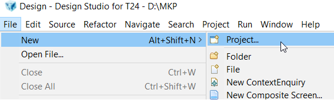
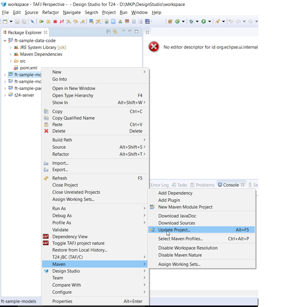
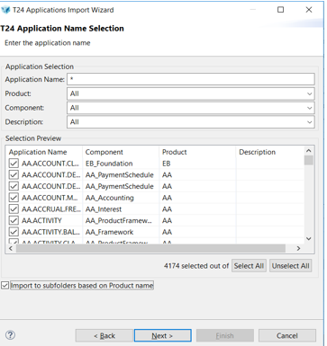
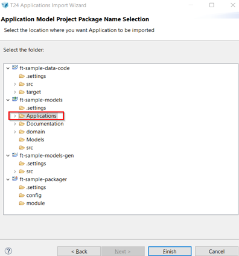
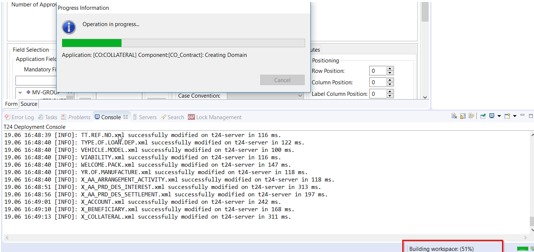

Start Design Studio
Prerequisites
To be able to use T24 cloud environment, you need to have access to:
- Design Studio
- Temenos Sandbox
- Tortoise Git - download from here
- PAAS Configuration Repository
Create New Project
The package delivered by Temenos MarketPlace contains the following:
- Design Studio
- T24 libraries
- TAFJ environment
Design Studio will be delivered pre-configured in order to be able to introspect T24 applications hosted in MarketPlace Could Infrastructure
- Start Design Studio application:
Go into DesignStudioT24 folder and double click on StartDesignStudio.bat

- Choose a workspace:
When it opens, browse for the Workspace folder which is in the DesignStudioT24 folder.

- Create project:
On the menu bar, click File > New > Project

Result: the New Project dialog box is displayed.
- Select Design Studio > Design Studio Template Project and click Next:

Result: the New Design Template Projects dialog box is displayed.
Select from the drop down list the template accorded to your T24 installation: t24-packager-tafj

- Set Template parameters values (mandatory fields as notified in previous image)

Note
In Value field, change the project-name from the defaulted one to “something at your choice” (here we've named it 'sample'). Use small letters
Note
In Value field, change component-name from the defaulted one to “something at your choice”. Start words with capital letters
Tip
Value fields above need to be changed in order to avoid overriding an existing jar, which already appears in the environment
- Click Finish to create the project.
Result: Four projects are created by the template. By default, ft-modelbank is the prefix of these projects:

Note
Instead of default 'ft-sample' it will appear 'the name' you provided
ft-sample-data-code: holding basic and data files.
ft-sample-models: holding Design Studio models that can be imported and amended thanks to dedicated editors.
ft-sample-models-gen: holding files Design Studio generates from the ft-modelbank-modelsproject.
ft-sample-packager: is the packager project itself from where you can launch the final artifact creation.
- On servers tab, click right and Add New T24 Server

- A new screen is open. Give a project name and click Next

- Choose connection type as T24 Server-Web service and click Finish

- Check your configuration (username, authorizer, Hostname address and Port):

Secured box needs to be checked.
Protocol should remain "ws".
Hostname should be the DNS hostname of T24 endpoint.
Port should be changed to 443.
Context should remain axis2.
- Change server state into active:

- If you go to Servers tab, state should be active:

Make sure T24 Connection is active. (If not, click on Start/Restart)
Expand ft-modelbank-data-code:

- Click on ft sample-models. Click right – select Maven – update Project

- Select all, then OK

- Expand ft-sample-packager, click right on Launch T24 packager > Run as > Launch T24 Packager (TAFJ)

Wait for the workspace to be built.
A successful packager build is shown in the console

Adding subroutines
In order to add a routine, follow below steps:


- Give a name for the routine you want to create:

- Result: the routine is created:

Note
After writing the routine, in case the compilation will throw an error related to “$PACKAGE is mandatory”, make sure you put on “Dunce Cap” as below:

Import T24 Applications
- Go to your models project. Right click on Applications and choose Import:

- Select Design Studio and choose Import T24 Applications, click on next button and wait until it loads

- Click on Select All button and check Import to subfolders based on Product name:

- Click on Next button and choose the location where to be imported the applications:

- Click on Finish button and wait until the operation is completed (this might take longer):

- A successful message will be displayed at the end and your application will be imported in your area.

Enquiries and Versions
Import Enquiries
- Go to Models, click right and choose Import:


- Select all or just enquiries that you are interested in

- Example of a single enquiry import:

- Click on Next button and chose the location:

- A success message is displayed:

Import Versions
- Go to Models, click right and choose Import:

- Select all or the versions of interest:

- See below example:

- Click on Next button and chose the location:

- A success message is displayed:

Build the project
- Go to: ft-sample-packager > Launch T24 Packager (TAFJ).launch > Run As > Launch T24 Packager (TAFJ)

- Wait for workspace to be built:


- You can also check build’s success here:

Clone PaaS Configuration Repository
- Make sure you have installed TortoiseGit.
- Make sure you have received the ppk private key to open ssh
- Create a folder somewhere in your local machine. In current example, it was used a folder named 'GitLab'
- Inside the created folder, click right and choose Git Clone

Insert as follows:
URL: git@gitlab.temenos.cloud:1c3pg74t41czk/corebanking.git Directory: D:\MKP\gitlab (path of your folder) Check Load Putty Key: browse for you ppk key

- Following alert message is displayed. Click yes

- Repository was cloned:

Deploy the Jar
In order to find the jar's location, check properties in ft-sample-packager.


- Copy/ drag the jar into the packages folder:

- Add and commit the jar to the repository by using Tortoise Git:

A screen will appear saying the file was added. Press commit:

A new screen will appear. Insert a comment in the upper window and then choose Commit and Push

A success message should be displayed.
Note
For any change, you can add, rename, delete, push, pull etc as per Tortoise commands: